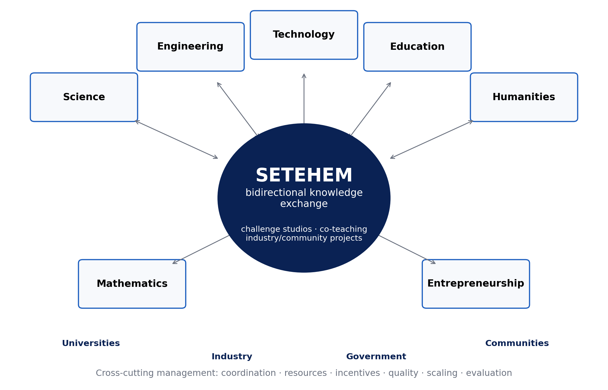

CHIATECH JOURNAL
SETEHEM · VOLUME 1 · ISSUE 1 · JULY 2026 · e024
PIONEER PUBLICATION · ACCEPTED ARTICLE · THEORY DEVELOPMENT ARTICLE · INTERDISCIPLINARY EDUCATION · ENTREPRENEURSHIP · WORKFORCE DEVELOPMENT · INNOVATION POLICY
The SETEHEM Model for Knowledge Democratization and Workforce Innovation in Nigeria: A Bidirectional Interdisciplinary Framework Linking Education, Technology and Entrepreneurship
CHIA Shiaondo Kenneth
CHIATECH Solutions and Resources Ltd, Abuja, Nigeria
ORCID: 0009-0009-6434-4586 · Correspondence: chiakenneth01@gmail.com
Article | Volume/Issue | Publication | ISSN | DOI |
|---|---|---|---|---|
e024 | 1(1) | Pioneer Issue · July 2026 | Pending assignment | Pending registration |
Abstract
Purpose: Disciplinary specialization is essential for depth, yet Nigeria’s education-to-work transition increasingly requires graduates who can combine technical knowledge with pedagogy, social interpretation, enterprise creation and implementation capability. This article develops the SETEHEM Model as a bidirectional interdisciplinary framework for knowledge democratization and workforce innovation. Conceptual approach: Its core constructs were mapped to diffusion of innovations, constructivist/experiential learning, systems thinking, absorptive capacity and Triple/Quadruple Helix perspectives, then aligned with current Nigerian higher-education and labour-market policy. Model: In this framework SETEHEM denotes Science, Engineering, Technology, Education, Humanities, Entrepreneurship and Mathematics. Management is treated as a cross-cutting implementation capability governing coordination, resources, incentives, quality and scaling. The model proposes bidirectional knowledge exchange among disciplines through challenge studios, co-teaching, industry/community projects, internships, incubation and applied research. Six testable propositions link interdisciplinary breadth, bidirectional exchange, experiential challenge work, ecosystem partnerships, management capability and contextual equity to problem framing, technology adoption, job versatility and entrepreneurial outcomes. Implications: The National Universities Commission’s 70% core/30% institution-specific CCMAS structure and its Skills Development and Entrepreneurship mandate create policy space for locally designed interdisciplinary modules. Conclusion: SETEHEM is best viewed as a theoretically grounded, testable architecture—not as a validated effect model. Its value will depend on implementation fidelity and future multi-institutional evaluation using explicit constructs and outcome measures.
Keywords: SETEHEM; interdisciplinary education; knowledge democratization; entrepreneurship; innovation; employability; university–industry linkage; Triple Helix; Nigeria
1. Introduction
Modern problems rarely respect academic boundaries. Energy transitions involve engineering, physical science, economics, public communication, ethics, regulation and enterprise. Digital health combines computing, biomedical knowledge, user behaviour, education and management. Agricultural innovation depends on biological science, engineering, data, market systems and community adoption. Yet universities necessarily organize expertise into departments, programmes and professional identities. The resulting tension is not a reason to abolish disciplines; it is a reason to create reliable mechanisms for disciplines to exchange knowledge while preserving depth.
The original SETEHEM manuscript was motivated by this tension in Nigeria. It argued for a framework that combines Science, Engineering, Technology, Education, Humanities, Entrepreneurship and Mathematics and, importantly, makes the exchange bidirectional: technical fields gain social, educational, ethical and enterprise insight, while non-technical fields gain access to technological and quantitative tools. That reciprocity is the model’s distinctive claim.
The current Nigerian policy environment makes this proposition timely. The National Universities Commission’s Core Curriculum and Minimum Academic Standards (CCMAS) provides a 70% minimum core and allows universities to design the remaining 30% around contextual needs. NUC’s Skills Development and Entrepreneurship Directorate explicitly promotes academia–industry collaboration, internships, labour-market intelligence, incubation and curriculum links to entrepreneurship. At the same time, recent World Bank analysis of Nigerian online job vacancies highlights demand across cognitive, higher-order, digital, project-management and people-management skill categories. These conditions create both a need and a policy mechanism for structured interdisciplinarity.
2. Conceptual Development Method
This paper is a theory-development article. The supplied source manuscript contained a coherent conceptual model but no empirical validation dataset. Claims that the model had already been “validated” were therefore removed. Development proceeded in four stages: construct extraction from the source manuscript; theoretical mapping to established learning, innovation and systems perspectives; contextual alignment with current Nigerian higher-education and skills policy; and conversion of broad aspirations into mechanisms, propositions and measurable indicators. The resulting framework is intended to be falsifiable through future evaluation.
3. Defining SETEHEM and Its Boundaries
In this model, SETEHEM denotes Science, Engineering, Technology, Education, Humanities, Entrepreneurship and Mathematics. These seven domains are not meant to become a single undifferentiated super-discipline. Their function is to provide complementary lenses for challenge-driven learning and innovation. Mathematics supports abstraction, modelling and measurement; science supports explanatory and empirical knowledge; engineering supports design under constraints; technology supports tools and systems; education supports learning, communication and capacity building; humanities support interpretation, ethics, culture and human meaning; entrepreneurship supports value creation, opportunity recognition and venture/resource mobilization.
Management is treated as a cross-cutting implementation capability rather than an eighth letter in the acronym. It coordinates people, finance, projects, quality, risk, intellectual property, partnerships and scaling. This distinction resolves a weakness in broad interdisciplinary rhetoric: collaboration does not occur simply because participants are placed in the same room. It needs governance.

Figure 1. SETEHEM as a bidirectional knowledge-exchange architecture. Disciplinary depth remains intact; exchange occurs through applied challenge mechanisms and is enabled by cross-cutting management and external ecosystem partners.
4. Theoretical Foundations
Table 1. Theories used to specify SETEHEM mechanisms rather than merely decorate the framework.
Theoretical lens | Relevant mechanism | SETEHEM implication |
|---|---|---|
Diffusion of Innovations | Adoption depends on perceived advantage, compatibility, complexity, trialability and social communication | Technology teaching should include user/context adoption, not only technical performance |
Constructivist & experiential learning | Knowledge is developed through active experience, reflection and guided meaning-making | Challenge studios, projects, prototypes and reflective cycles connect disciplines |
Systems thinking | Outcomes arise from interacting components, feedback and delays | Curriculum, industry, finance, regulation and community factors are modelled as one system |
Absorptive capacity | Actors need prior knowledge and routines to recognize, assimilate and exploit external knowledge | Cross-disciplinary literacy and boundary-spanning roles improve knowledge uptake |
Triple/Quadruple Helix | Innovation emerges from university–industry–government interaction, extended by civil society/users | External partners are part of the learning/innovation architecture, not end-stage guests |
Triple Helix scholarship is especially relevant because university–industry collaboration can align curricula and research with practical needs, enable knowledge transfer and expand innovation capacity. Recent empirical work continues to show the importance—and difficulty—of such linkages. The SETEHEM extension is to place interdisciplinary learner development inside that ecosystem rather than treating university–industry contact as a separate technology-transfer activity.
5. Core Mechanisms of the SETEHEM Model
5.1 Knowledge democratization
Knowledge democratization in SETEHEM does not mean removing expertise thresholds or flattening disciplinary standards. It means creating structured access to useful concepts, tools, data and language across disciplinary boundaries. A humanities student should be able to use basic data reasoning and digital tools without becoming a computer scientist; an engineer should be able to analyse stakeholder values and communicate learning without becoming a professional educator. The relevant outcome is functional interdisciplinary literacy.
5.2 Bidirectional exchange and boundary spanning
Most “STEM for everyone” initiatives are implicitly one-way: technology is exported to other fields. SETEHEM requires reverse flow as well. Humanities can reveal ethical, historical and cultural constraints on adoption; education can improve how innovations are taught and diffused; entrepreneurship can test whether a technically sound solution creates sustainable value. Boundary spanners—faculty teams, project mentors, innovation officers and students working across programmes—translate between disciplinary languages.
5.3 Challenge studios and experiential integration
The primary instructional unit proposed is the challenge studio: a time-bounded, assessed problem in which multidisciplinary teams must investigate a real need, define success criteria, build or analyse a solution, test it with users or evidence, and communicate both technical and social implications. Studios can be embedded in existing courses, offered as institution-specific CCMAS components, or structured as microcredentials. This avoids the cost of creating entirely new degree programmes while still producing recurrent interdisciplinary practice.
5.4 Entrepreneurship and translation
Entrepreneurship is included because useful knowledge must often move from classroom or laboratory into products, services, organizations or community practices. Research on Nigerian universities shows that entrepreneurship education already has a policy history but that implementation quality and institutional support vary. SETEHEM therefore links opportunity recognition, customer/user discovery, costing, intellectual property, business models, social enterprise and venture experiments to technical and social problem solving rather than treating entrepreneurship as a generic standalone course.
6. Testable Propositions
Proposition | Expected relationship | Illustrative measure |
|---|---|---|
P1 — Interdisciplinary breadth | Greater functional literacy across SETEHEM domains improves problem framing and solution completeness | Validated interdisciplinary problem-framing rubric |
P2 — Bidirectional exchange | Reciprocal knowledge exchange improves technology/innovation adoption more than one-way technology transfer | Adoption intention/use, stakeholder fit, revision cycles |
P3 — Experiential mediation | Challenge-studio participation mediates the relationship between curriculum exposure and applied problem-solving competence | Performance tasks, prototypes, client/user evaluation |
P4 — Ecosystem moderation | University–industry–government/community linkage strengthens translation from student work to employability and innovation outcomes | Internships, partner projects, licensing/start-up/community adoption |
P5 — Management capability | Coordination, incentives and resource governance moderate the scalability and sustainability of interdisciplinary programmes | Completion, partner retention, cost per learner, faculty workload |
P6 — Contextual equity | Local relevance and inclusive design improve participation, legitimacy and persistence across diverse learner groups | Access, retention and outcomes disaggregated by relevant groups |
7. Implementation in Nigerian Universities
The 30% institution-specific space in CCMAS creates a practical pathway for universities to adapt interdisciplinary offerings without displacing professional core requirements. SETEHEM implementation can therefore start small: one cross-faculty challenge studio, a shared digital/data methods module, an industry/community problem bank and a venture translation pathway. Expansion should follow evidence rather than institutional branding.
Table 2. Phased implementation roadmap.
Phase | Institutional action | Decision gate |
|---|---|---|
0. Readiness | Map existing courses, faculty expertise, partners, infrastructure, IP/ethics rules and student workload | Is there a real challenge, accountable lead and assessment plan? |
1. Pilot | Run 1–3 challenge studios with mixed teams and partner briefs | Do learners show better interdisciplinary performance than baseline/comparison? |
2. Institutionalize | Embed credits/microcredentials, faculty workload recognition and partner agreements | Are outcomes repeatable and costs/workload sustainable? |
3. Translate | Connect strong projects to internships, incubation, research, procurement or community deployment | Is external value demonstrated without compromising academic integrity? |
4. Scale and learn | Expand across faculties/sites with common metrics and local adaptation | Does fidelity remain adequate and do equity gaps narrow? |
8. Evaluation Architecture
A credible evaluation should avoid using graduate employment as the sole outcome because labour demand and macroeconomic conditions also shape employment. Evaluation should therefore span multiple levels: learner knowledge and interdisciplinary problem solving; self-efficacy and collaboration; artefact/prototype quality; technology adoption or user fit; internships and partner satisfaction; entrepreneurial action; faculty collaboration; equity; cost; and longer-term labour-market or enterprise outcomes. Quasi-experimental or stepped-wedge designs may be feasible where random assignment of programmes is impractical, while qualitative process evaluation can explain why implementation succeeds or fails.
9. Discussion
SETEHEM contributes a language for reciprocal interdisciplinarity. Its strongest departure from generic “21st-century skills” rhetoric is the insistence that knowledge flows in both directions and that the flow is attached to concrete mechanisms—studios, co-teaching, partner projects, internships and venture translation. This matters in Nigeria because current policy already creates room for contextual curriculum design and explicitly calls for university–industry interaction. The framework’s task is to organize those opportunities around measurable learning and innovation outcomes.
The model also guards against two common errors. The first is technological solutionism: assuming that adding digital tools produces innovation regardless of human, cultural or institutional fit. The second is interdisciplinarity without depth: assembling teams that lack enough disciplinary expertise to solve the problem rigorously. SETEHEM therefore retains strong disciplines while building translation capability at their boundaries.
10. Limitations and Research Agenda
SETEHEM has not yet been empirically validated. The framework is a theory-development output and its propositions may be modified or rejected by evidence. Constructs such as “knowledge democratization” and “job versatility” require careful operational definitions to avoid vague measurement. Implementation may also face timetable rigidity, faculty incentives, professional accreditation constraints, partner fatigue, unequal access to equipment and the risk that entrepreneurship becomes commercialization at the expense of public or social value. Multi-institutional pilots should therefore test both learning outcomes and organizational feasibility.
11. Conclusion
Nigeria does not need interdisciplinarity as a slogan. It needs repeatable structures through which disciplinary knowledge can be exchanged, applied and evaluated. SETEHEM provides such a candidate architecture: seven knowledge domains connected through reciprocal exchange, challenge-based experience and external innovation partners, with management as the cross-cutting capability that makes collaboration executable. The model is now sufficiently specified to move from advocacy to testing. Its credibility should ultimately rest on whether students frame problems better, learn across boundaries without losing disciplinary depth, translate knowledge more effectively and create value in Nigerian workplaces, enterprises and communities.
Declarations
Declaration | Statement |
|---|---|
Ethics | Not applicable. This is a conceptual/theory-development article and did not involve human participants or participant-level data. |
Funding | No external grant funding is declared. |
Competing interests | The author declares no competing interests. |
Data availability | Not applicable. No empirical dataset was generated or analysed. |
Author contributions | Chia Shiaondo Kenneth: original SETEHEM concept, conceptualization, theory integration, framework development and manuscript authorship. |
AI/editorial preparation | The article was substantively reconstructed from the author-supplied conceptual manuscript, with current public scholarship used to strengthen theory and policy alignment; no empirical validation was invented. |
References
Carayannis, E. G., & Campbell, D. F. J. (2009). “Mode 3” and “Quadruple Helix”: Toward a 21st century fractal innovation ecosystem. International Journal of Technology Management, 46(3/4), 201–234.
Cohen, W. M., & Levinthal, D. A. (1990). Absorptive capacity: A new perspective on learning and innovation. Administrative Science Quarterly, 35(1), 128–152.
Etzkowitz, H., & Leydesdorff, L. (2000). The dynamics of innovation: From national systems and “Mode 2” to a Triple Helix of university–industry–government relations. Research Policy, 29(2), 109–123.
Hailu, A. T. (2024). The role of university–industry linkages in promoting technology transfer: Implementation of Triple Helix model relations. Journal of Innovation and Entrepreneurship, 13, 25. https://doi.org/10.1186/s13731-024-00370-y
Kolb, D. A. (1984). Experiential learning: Experience as the source of learning and development. Prentice Hall.
National Universities Commission. (2023). Core Curriculum and Minimum Academic Standards (CCMAS) for Nigerian Universities. Abuja, Nigeria: NUC.
National Universities Commission. (2026). Skills Development and Entrepreneurship Directorate: Vision, mission and mandate. Abuja, Nigeria: NUC.
Oyinlola, M., Kolade, O., Okoya, S. A., Ajala, O., Adefila, A., Adediji, A., Babaremu, K., Tijani, B., Adejuwon, J., Wambui, F., & Akinlabi, E. T. (2024). Entrepreneurship and innovation in Nigerian universities: Trends, challenges and opportunities. Heliyon, 10(9), e29940. https://doi.org/10.1016/j.heliyon.2024.e29940
Rogers, E. M. (2003). Diffusion of innovations (5th ed.). Free Press.
Senge, P. M. (1990). The fifth discipline: The art and practice of the learning organization. Doubleday.
World Bank. (2025). Nigeria—Skill demand trends: Insights from online job vacancy data. Washington, DC: World Bank Group.
Suggested citation: Chia, S. K. (2026). The SETEHEM model for knowledge democratization and workforce innovation in Nigeria: A bidirectional interdisciplinary framework linking education, technology and entrepreneurship. CHIATECH JOURNAL, 1(1), e024. DOI pending registration.
© 2026 Chia Shiaondo Kenneth. Author retains copyright. Published by CHIATECH Solutions and Resources Ltd under CC BY 4.0.